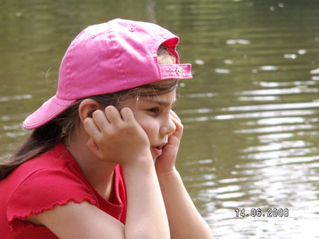

| Наша Маша или как мы купили ребенка в Икее,принесли домой и давай собирать!:))) http://www.babyblog.ru/community/ post/netakoi/271873 |
| Эта история про семью которая не опустила руки и
боролась и борется за здоровье своего
ребенка. Почитайте. Это очень ..очень! Они молодцы! ( Только вот от прочтения таких историй
понимаешь. сколько же зависит от нас. родителей. От нашей любви к нашим детям.) Бутурлина Юлия http://velositi.livejournal.com/ Это история про нашу дочь.И про нас. |
|  | Маша родилась в срок. Беременность была спокойная, без
особенностей. Наступила по плану, когда мы решили ,что готовы стать родителями. Оба прошли
диспанцеризации. Были вполне здоровы. Я взяла
отпуск. Сидела и ждала двух полосок. И они не заставили себя ждать. Рожала я легко, быстро. В
роддоме, где когда-то проходила специализацию. Соответственно,на родах были наверное, все, кто
мог! Все мои обожаемые учителя, и атмосфера была очень приятная. Я родила, посмотрела на
дочь. 2850,50 см,8-9 баллов. Ее завернули и положили под лампу.А народ, весело болтая, стоял
вокруг.
Пришла педиатр,и тоже, весело поздравляя меня, подошла посмотреть ребенка. Развернула ее и замолчала. Замолчала так, что это все услышали. И подошли к ней. И тоже замолчали. Это было такое говорящие молчание, что я все поняла и заплакала сразу,еще до того, как прозвучал диагноз. Мы же свои, не нужно было слов, все было у них в глазах...Прибежал анестезиолог и быстро отключил меня. Нужно было зашить эпизио. Им всем нужно было время, я думаю,что бы найти слова. У Маши был врожденный порок развития-атрезия ануса (это значит,его не было,вместо попы-гладкая кожа). И свищ из кишечника в пупок. На тот момент мы узнали только это. Ее сразу увезли в реанимацию Русаковской больницы. |
|
Муж уехал с ней, раздавая по дороге деньги. Состояние было,конечно тяжелое у всех нас. Потому
что мы понимали,что ребенку придется пройти через тяжелые операции. И неизвестно сколько их
будет. И,как врач, я понимала, насколько тяжелые и ювелирные это будут операции. Но раскисать
просто не было времени-нужно было собраться, организовать себе хоть какую-то лактацию. Муж
привез отсос и я была занята. На 5 сутки выписалась,сняв швы.И поехала в больницу.
Маша была уже в отделении хирургии, т.к. чувствовала себя вполне сносно, а стул отходил из еще одного свища во влагалище. Она сразу взяпа грудь. И мы стали жить в больнице. Ждать операцию. Первую сделали в 20 дней. Иссекли свищ из кишечника в пупок. Операция получилась тяжелой: больше 2 часов, свищ оказался большого диаметра, пришлось сшивать всю кишку, Маша, взяв папину 1 группу крови, дала кровотечение. Хируги, потрясающие доктора! Работают в огромных микроскопах, надетых на голову! Несколько часов. Потом пошел мучительный послеоперационный период. Нельзя было 2 недели ребенку пить и есть. Когда она начинала тихонько скулить от голода, я звала медсестру, и мы загружали ее опять. Через 10 дней разрешили макать пустышку в глюкозу и сосать ее. Еще через пару дней-пить воду по чуть-чуть. А еще через неделю мы выписались домой. Набирать вес и готовиться к пластике ануса. При выписке нас направили к оккулисту,потому что Маша странно смотрела и форма зрачков была вытянутой. Мы поехали в Морозовскую больницу в КДЦ. И там узнали самое тяжелое: у Маши колобома сетчатки. Т.е. ее, сетчатки, просто нет. Мы потеряли с мужем дар речи. А нелюбимые мною доктора Морозовской, на наш оторопелый вопрос: "Что нам делать?!" Ответили коротко: "Езжайте домой. Оформите инвалидность. Вот вам телефоны организаций, помогающих незрячим детям. До свидания." Наверное, именно это был самый тяжелый момент после рождения дочки.У Маши порок развития 22 хромосомы, дающий именно это сочетание:атрезия+колобома. Он случается на 2-5 неделе беременности. Причины: радиационное ,химическое облучение или неизвестные факторы. Мы приехали домой, муж сорвал и выкинул мобиль с кроватки. Выдохнув,мы занялись тем,что могли: стали набирать вес для след.операции. Ну и заниматься дочкой: плавать, гулять, играть, массаж и пр. В 3,5 месяца мы поехали на операцию в ту же Русаковку.Она прошла не совсем удачно:анус собрать идеально не получилось. Не хватало ни мышц промежности, ни длины кишечника. Но,по-крайней мере, Маша стала какать, как все нормальные дети. Когда мы приехали домой,то случилось важное событие: кто-то из друзей в разговоре узнал о проблемах зрения у дочки и сказал волшебную фразу: "А у нас есть одна знакомая, профессор по детской офтальмологии. Хотите с ней поговорить? "Конечно,мы хотели! И уже она отправила нас к нашему врачу-доктору наук,ведущему специалисту именно по нашей проблеме в стране! Он 3 часа смотрел Машу, и сказал: "Будем работать! Попробуем вытащить ее максимум!". Это были волшебные слова для нас-бездействие убивало! И мы начали работать. Процедуры,очки,назначения.... Маша между тем росла.Как ни странно обгоняя, сверстников в развитии: рано села, рано пошла,заговорила. Спокойный жизнерадостный ребенок! Ели,спала,играла! Мы много ездили по организациям, занимающимся с детьми инвалидами. Но оказалось, что для незрячих и слабовидящих практически нет программ развития! Все ориентированы на ДЦП, синдром Дауна, аутизм. Педагоги использовали нас как учебный материал. Учитывая высоченную стоимость подобных занятий, это было как-то не очень. Больше занимались сами. Ходили в развивающие центры для обычных детей, не особо распространяясь о наших особенностях. В 3 года мы начали с ней кататься на горных лыжах. Как она ездит? Не знаю.Третий глаз позволяет! :))) Я одевала ей собачий ошейник на талию, пристегивала поводок. Она ехала передо мной, а я страховала, держа ее на поводке и давала команды, чего когда делать. В 4 года она пошла в спортшколу. О том,что она видит 0,5 % от нормы, знал только тренер. Никто не давал ей поблажек. Да они ей и не нужны! Девушка у нас с амбициями! Прирожденная отличница. Пока не сделает идеально, не успокоится. В 5 лет пошли в муз.школу, добавили верховую езду, много разных подвижных игр. От скалолазания, до велосипеда, роликов, плавания. Это все укрепляет мышцы промежности и малого таза. За это время пережили еще 2 операции на кишечнике. Последняя-очень удачная. И одну-по косметической коррекции косоглазия. Девушка-то у нас красивая! Забыли про заросший порок сердца, странности в строении почек. Вылечили злобную многоочаговую аллопецию. А главное,ее зрение увеличилось с 0,5 % до 10%! Собираемся в сентябре в школу. Много рисуем,поем,катаемся на лыжах и всем,что едет:))) Прожив много месяцев в больницах, могу сказать: главное, не отчаиваться, не позволять себе раскисать и не жалеть себя! Когда видишь детей, чьи родители не знают, доживет ли их ребенок до утра, понимаешь, что надо использовать каждый шанс, который у нас есть. Стыдно за: моменты отчаяния, за некую уязвленную гордость, что мы,здоровые, умные, спортивные, не смогли выносить и родить здорового ребенка. За агрессию к тем, кто чего-то там выступает в Машин адрес. Пустое это все... Чего раздражает: ненужная, навязчивая жалость, ужас при взгляде на нашего ребенка, навязчивые вопросы: "А точно нельзя будет все исправить? Может можно чего-то пришить?" Как будто отличные от большинства люди обязательно должны быть приведены к одному знаменателю! Омерзительны вопросы: "а что? Нельзя было до родов узнать об этом и сделать аборт?! .Вызывают негодование ситуации типа такой: "Мы гуляем.Маше 3 года, на одном глазу ее спец. пластырь, часть терапии. Мимо идет мать с 6-летним мальчиком. Мальчик, тыкая пальцем в Машу, спрашивает, чего у нее с глазом. И мать, не долго думая, начинает ГРОМКО рассказывать ему, что вот! Девочка было плохая, маму не слушалась и выколола себе глаз! Не люблю рассказы должностных лиц о том,что в интернате таким детям лучше. А мы-упрямые, не понимаем этого! Нет.Не понимаем. И не поймем. И счастливо живем с нашей потрясающей дочкой. Как тот крокодил,из нашего любимого мультика "Что случилось с крокодилом?". Страшно, бессовестно ею гордимся. Не ждем медалей: у нас ,как и у всех родителей нет другого выхода, кроме как дать ребенку максимум. Не зависмо от того, какой он .Всем желаем здоровья, сил и счастья. Оно не снаружи, оно внутри нас.... |